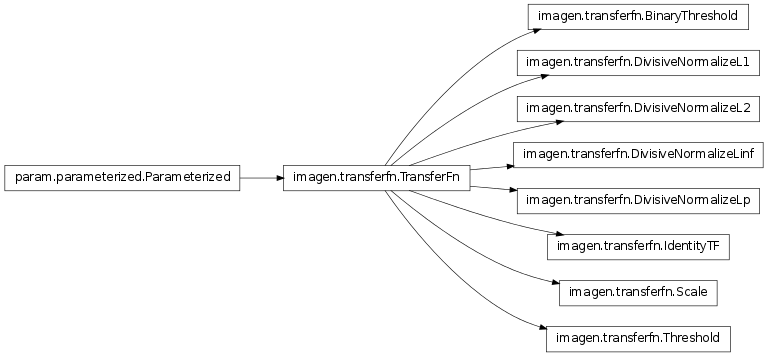

TransferFns: accept and modify a 2d array
Bases: imagen.transferfn.TransferFn
Forces all values below a threshold to zero, and above it to 1.0.
param Parameter norm_value (constant=False, default=None, instantiate=False, pickle_default_value=True, precedence=None, readonly=False)
Bases: imagen.transferfn.TransferFn
TransferFn that divides an array by its L1 norm.
This operation ensures that the sum of the absolute values of the array is equal to the specified norm_value, rescaling each value to make this true. The array is unchanged if the sum of absolute values is zero. For arrays of non-negative values where at least one is non-zero, this operation is equivalent to a divisive sum normalization.
param Number norm_value (allow_None=False, bounds=None, constant=False, default=1.0, inclusive_bounds=(True, True), instantiate=False, pickle_default_value=True, precedence=None, readonly=False, time_dependent=False, time_fn=<Time Time00001>)
Bases: imagen.transferfn.TransferFn
TransferFn to divide an array by its Euclidean length (aka its L2 norm).
For a given array interpreted as a flattened vector, keeps the Euclidean length of the vector at a specified norm_value.
param Number norm_value (allow_None=False, bounds=None, constant=False, default=1.0, inclusive_bounds=(True, True), instantiate=False, pickle_default_value=True, precedence=None, readonly=False, time_dependent=False, time_fn=<Time Time00001>)
Bases: imagen.transferfn.TransferFn
TransferFn to divide an array by its L-infinity norm (i.e. the maximum absolute value of its elements).
For a given array interpreted as a flattened vector, scales the elements divisively so that the maximum absolute value is the specified norm_value.
The L-infinity norm is also known as the divisive infinity norm and Chebyshev norm.
param Number norm_value (allow_None=False, bounds=None, constant=False, default=1.0, inclusive_bounds=(True, True), instantiate=False, pickle_default_value=True, precedence=None, readonly=False, time_dependent=False, time_fn=<Time Time00001>)
Bases: imagen.transferfn.TransferFn
TransferFn to divide an array by its Lp-Norm, where p is specified.
For a parameter p and a given array interpreted as a flattened vector, keeps the Lp-norm of the vector at a specified norm_value. Faster versions are provided separately for the typical L1-norm and L2-norm cases. Defaults to be the same as an L2-norm, i.e., DivisiveNormalizeL2.
param Number p (allow_None=False, bounds=None, constant=False, default=2, inclusive_bounds=(True, True), instantiate=False, pickle_default_value=True, precedence=None, readonly=False, time_dependent=False, time_fn=<Time Time00001>)
param Number norm_value (allow_None=False, bounds=None, constant=False, default=1.0, inclusive_bounds=(True, True), instantiate=False, pickle_default_value=True, precedence=None, readonly=False, time_dependent=False, time_fn=<Time Time00001>)
Bases: imagen.transferfn.TransferFn
Identity function, returning its argument as-is.
For speed, calling this function object is sometimes optimized away entirely. To make this feasible, it is not allowable to derive other classes from this object, modify it to have different behavior, add side effects, or anything of that nature.
param Parameter norm_value (constant=False, default=None, instantiate=False, pickle_default_value=True, precedence=None, readonly=False)
Bases: imagen.transferfn.TransferFn
Multiply the input array by some constant factor.
param Parameter norm_value (constant=False, default=None, instantiate=False, pickle_default_value=True, precedence=None, readonly=False)
Bases: imagen.transferfn.TransferFn
Forces all values below a threshold to zero, and leaves others unchanged.
param Parameter norm_value (constant=False, default=None, instantiate=False, pickle_default_value=True, precedence=None, readonly=False)
Bases: param.parameterized.Parameterized
Function object to modify a matrix in place, e.g. for normalization.
Used for transforming an array of intermediate results into a final version, by cropping it, normalizing it, squaring it, etc.
Objects in this class must support being called as a function with one matrix argument, and are expected to change that matrix in place.
param Parameter norm_value (constant=False, default=None, instantiate=False, pickle_default_value=True, precedence=None, readonly=False)
Transfer functions may need additional information before the supplied numpy array can be modified in place. For instance, transfer functions may have state which needs to be allocated in memory with a certain size. In other cases, the transfer function may need to know about the coordinate system associated with the input data.